Draws the effect of one exposure from each of several fitted models, one
row apiece, so that exposures that were each fitted in their own model come
onto a single figure. None of the models may interact its exposure with
anything; use foresty_interaction() for those.
Usage
foresty_main(
fits,
exposure,
measure = NULL,
exponentiate = TRUE,
labels = NULL,
outcome = NULL,
outcome_reference = NULL,
outcome_reference_row = FALSE,
ci_level = 0.95,
contrast = NULL,
at = NULL,
vcov = NULL,
cluster = NULL,
table = TRUE,
columns = NULL,
person_time = NULL,
layout = NULL,
title = NULL,
subtitle = NULL,
xlab = NULL,
html = FALSE
)Arguments
- fits
A list of fitted models. Models fitted by
stats::glm(),stats::lm()and thesurvivalpackage are supported, as is any fit supplyingcoef(),vcov()and a model frame.- exposure
Name of the exposure variable in each model, as a character vector: either one name for all of them, or one name per model. Naming an element, as
exposure = c(NO2 = "no2"), gives that variable its label on the figure, which saves repeating it inlabels.- measure
Effect measure, one of
"OR","RR","HR","IRR","MD"or"Coefficient". The default reads it from the model: a logistic regression gives an odds ratio, as do the ordinal and multinomial forms of one, a Cox model a hazard ratio, a Poisson model with an offset an incidence rate ratio, and a linear model a mean difference. Ratios are exponentiated; differences are not. What an offset holds is not recorded anywhere, so a Poisson model offset by something other than person-time – the size of a population, say – is named here instead, asmeasure = "RR".- exponentiate
Whether a ratio measure is drawn as a ratio.
TRUE, the default, draws an odds ratio as an odds ratio.FALSEleaves it on the scale the model was fitted on: the figure reports a log odds ratio, read against zero rather than against one, and the estimates and their intervals come back on that scale fromtidy()as well. It says nothing about a mean difference or a coefficient, which are on that scale already and are never exponentiated.- labels
Named character vector giving the label to draw for a variable, as
c(no2 = "Nitrogen dioxide"). Names not matched are left as they are. This is where the exposure is renamed, and naming it where it is chosen –exposure = c(NO2 = "no2")– comes to the same thing.- outcome
What to call the outcome, as
outcome = "incident asthma". The default takes it from the left of the model's formula, which is the name of a column –asthma_ever_dx,evt5– and is rarely what a figure should say the effect is an effect on. It is written wherever the outcome is named: the axis under the plot, the title the package writes for itself, and the HTML report.NAnames none, leaving "Adjusted odds ratio" on its own for a figure whose caption says what of.- outcome_reference
For a multinomial logistic regression, the level of the outcome every estimate is read against, as
outcome_reference = "None".NULL, the default, is the level the model itself was referred to, read off the fit as the level it holds no equation for rather than assumed to be any particular one. Naming another does not refit anything: the odds ratio of one level against another is the difference between their two equations, and the covariance of the pair is already in the model. Every other level is then drawn against it, one row apiece, each row saying which two levels it compares. It says nothing about a model of one equation, whose reference is fixed by how the outcome is coded, and is refused there rather than ignored.- outcome_reference_row
Whether that level is drawn as a row of its own.
FALSE, the default, draws only the levels compared with it, each row saying which two levels it compares.TRUEadds a row for the reference level itself, the way the reference level of a categorical exposure is drawn: it carries no estimate, being the definition the other rows are differences from, so it is1on the ratio scale and0on the scale the model was fitted on, with no interval, no test and no p-value. It is one row whatever the exposure is, since it is the same definition at every value of it, and the counts beside it are of everybody in that level of the outcome for the same reason: the row is not about a value of the exposure, so it is not counted at one. On a figure of subgroups it is drawn once inside each and counted within it. It says nothing about a model of one equation.- ci_level
Confidence level of the intervals. Defaults to
0.95.- contrast
For a continuous exposure, the increment the effect is reported per.
NULL, the default, is one unit and is not written on the figure. An increment you name is:contrast = 10draws the row as"NO2 (per 10)"andcontrast = 1draws it as"NO2 (per 1)", the same estimate as the default said out loud. No unit is invented, since the package cannot know what a column's numbers mean; name the unit inlabels, asc(no2 = "NO2, ug/m3"), and the row reads"NO2, ug/m3 (per 10)".contrast = "iqr"takes the increment from the data instead: the interquartile range of the exposure as the model saw it, which is what an exposure with no natural unit is usually reported per. The range it came to is written beside the variable, as"NO2 (per IQR, 8.44)", because an effect per interquartile range cannot be compared with anything unless the figure says which range that was.contrastsays nothing about a categorical exposure, whose comparisons are its levels.- at
The two values of the exposure to contrast, as
c(from, to). Which two they were is written beside the exposure, as"NO2 (10 -> 20)", wherever the exposure is named: every row of a figure is that same comparison taken within another subgroup, so it is said once rather than on each of them. An exposure entered as a spline, or in any other way that spreads it over more than one coefficient, has no single effect to report and is drawn only whenatnames the two values; any other exposure may be given them too.atandcontrastboth say which two values are compared, so only one of them is accepted at a time, but they do not say it the same way:contrastis an increment taken from the middle of the exposure's own distribution, andatis the two values themselves. Where the exposure enters the model as it stands the two come to the same number, an increment being the same difference wherever it is taken; where it enters transformed –log(no2), a spline, a polynomial – they do not, andatis the one that says where on the curve the difference was taken. For a categorical exposure the two values are two of its levels, and the figure is then that one comparison rather than a row for every level.- vcov
Robust standard errors.
NULL, the default, uses the model's own."robust"gives the heteroskedasticity-consistent sandwich estimator (HC1), and"HC0"to"HC4"name one exactly; both come from thesandwichpackage. A function is called on the fit, and a matrix is used as it stands. For a Cox model refit withrobust = TRUE; a fit that is already robust is used as it is.- cluster
Cluster-robust standard errors, passed to
sandwich::vcovCL(). It says which observations belong together, so it takes a column name, a vector of one identifier per observation, or a one-sided formula:cluster = "practice_id",cluster = data$practice_idorcluster = ~practice_id.- table
Whether to draw the table of numbers beside the plot. Defaults to
TRUE, a forest plot being read from the numbers as much as from the marks;table = FALSEleaves a plain figure, andsummary()andtidy()report the same numbers at the console either way.- columns
Which columns the table carries, from
"estimate","p","n","events","person_time","interaction_p"and, where both tests of an interaction were asked for,"interaction_p_lrt". The default shows the estimate and the p-value together with whichever of the others the models can supply. On a figure reporting a test of an interaction the p-value of each row is left off, being easily read as the test beside it; name it incolumnsto have it back.- person_time
The unit person-time is reported in, for a model that carries any.
NULL, the default, reports the total the model was fitted over. A number divides by it, soperson_time = 1000draws a column of thousands of person-years and heads it"Person-time (per 1,000)", since a count of person-time that does not say what it counts cannot be read against another study's. Naming the number heads the column outright, asperson_time = c("Person-years (per 1,000)" = 1000). The unit reaches the figure,summary()and the HTML report alike. It does not refit the model or change its estimates, confidence intervals, or p-values:person_timecontrols only how the person-time column is written.- layout
How the figure is drawn: the name of a style, as
layout = "jama", or a layout built byforesty_layout()when something about it has to be changed. The styles are"classic","jama","nejm","lancet","bmj"and"revman".- title
Plot title. The default names the measure, the outcome it is a measure of, the exposure it is reported for and the fact that the estimate comes from a model with no interaction term in it, as
"Adjusted odds ratio for asthma associated with NO2, from one model without an interaction term".NAdraws none, and the journal styles draw none, a caption being where a journal puts that.- subtitle
Plot subtitle.
NULL, the default, draws none.- xlab
The label under the plot, which by default names the measure and the outcome, as
"Adjusted odds ratio for asthma". A string is drawn as it was given –xlab = "Odds ratio (95% CI), NO2 per 10 ug/m3"– andNAdraws none. Renaming only the outcome is whatoutcomeis for; this replaces the whole line.- html
Whether to write the HTML report – the model it was drawn from, the estimates, the figure and the whole coefficient table, on a page that is a single file and can be sent on.
FALSE, the default, writes nothing, so nothing leaves the session unless it is asked for.TRUEwrites it to a file named for the exposures it is about, joined by underscores where there is more than one, so that a figure of NO2 is written tono2.htmlin the working directory. A path writes it there instead, ashtml = "reports/no2.html". The report can also be written at any time afterwards withforesty_report().
Value
A ggplot2 object, of class foresty, carrying the estimates it
was drawn from. Print it to draw it. summary() reports the coefficients
and tests behind it, tidy() returns the estimates as a data frame, and
predict() passes through to the underlying model.
Details
The effect is the difference between two rows of the model's own design
matrix, one at the baseline value of the exposure and one at the value it is
compared with, so it is read off correctly whether the exposure is
continuous, binary or a factor with several levels, and whatever contrast
coding the fitting function used. The estimate and its confidence interval
are computed by car::linearHypothesis().
A categorical exposure gets one row per level, the reference level included and marked as such, with the levels named on the rows and the variable named once at the left of the figure.
A splined exposure
An exposure entered as a spline has no single effect to report: the difference it makes depends on where along the curve it is taken. So the two values are named, and the row says which they were:
fit <- glm(asthma ~ splines::ns(no2, 3) + sex, family = binomial, data = d)
foresty_main(list(fit), exposure = "no2", at = c(10, 20))The basis has to be built inside the formula, by splines::ns(),
splines::bs(), stats::poly() or another function of the variable, so the
two design-matrix rows can be evaluated at the two values.
A basis computed before the fit and entered as columns of its own –
Hmisc::rcspline.eval() written into spline1, spline2, spline3 and
then fitted as y ~ spline1 + spline2 + spline3 – cannot be handled that
way, because nothing in the fit records that those three columns are one
variable or how to recompute them at another value. Name the exposure and
the model refuses, saying that it is not in the model. Put the basis in the
formula instead, which fits exactly the same model:
Adjusting the figure
The result is a ggplot2 object, so layers, scales and themes are added to
it as usual, and + always reaches the forest:
foresty_main(list(fit), "no2") + ggplot2::coord_cartesian(xlim = c(0.8, 2))
foresty_main(list(fit), "no2") + ggplot2::theme_minimal(base_size = 14)& reaches every panel of a figure that has more than one, which is worth
knowing about but rarely what you want: a scale or a coordinate system
applied to the table of numbers beside the plot will spoil it. Use +.
Examples
fit_no2 <- glm(asthma ~ no2 + sex + maternal_smoking + maternal_age,
family = binomial, data = foresty_cohort)
fit_bc <- glm(asthma ~ black_carbon + sex + maternal_smoking + maternal_age,
family = binomial, data = foresty_cohort)
foresty_main(
list(fit_no2, fit_bc),
exposure = c("no2", "black_carbon"),
labels = c(no2 = "NO2", black_carbon = "Black carbon")
)
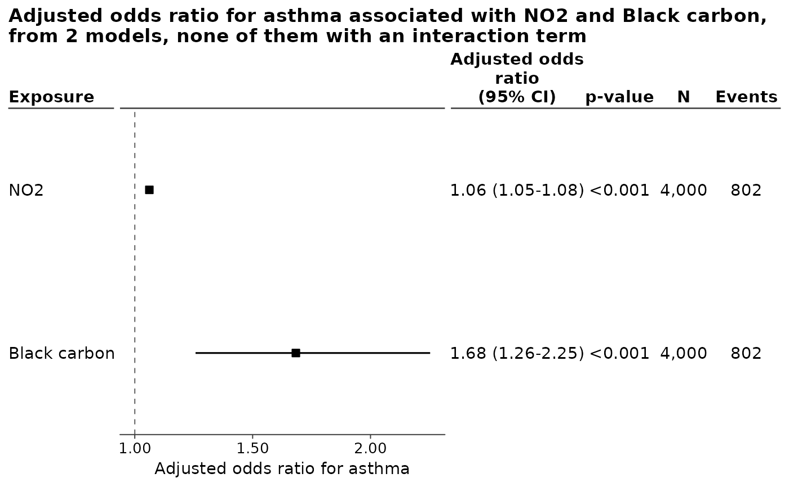
# A categorical exposure: the levels are named, the variable once at the left.
fit_urban <- glm(asthma ~ urbanicity + sex + maternal_age,
family = binomial, data = foresty_cohort)
foresty_main(list(fit_urban), exposure = "urbanicity")
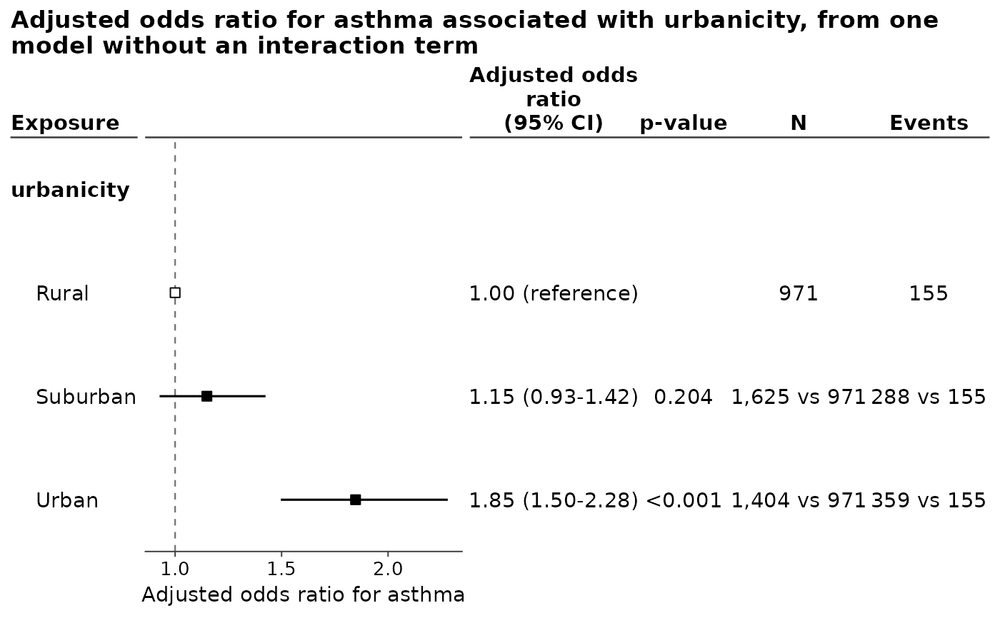
# In the layout of a journal, and without the numbers beside the plot.
foresty_main(list(fit_urban), exposure = "urbanicity", layout = "jama")
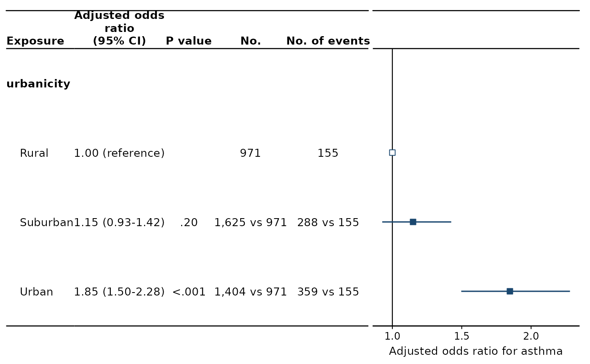
foresty_main(list(fit_urban), exposure = "urbanicity", table = FALSE)
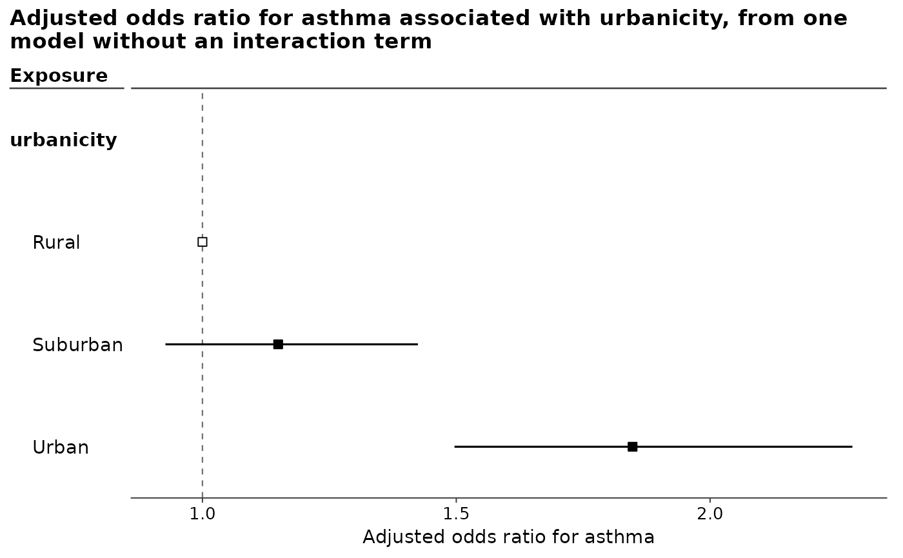
# Per 10 units of the exposure rather than per 1, which the row says.
foresty_main(list(fit_no2), exposure = "no2", contrast = 10)
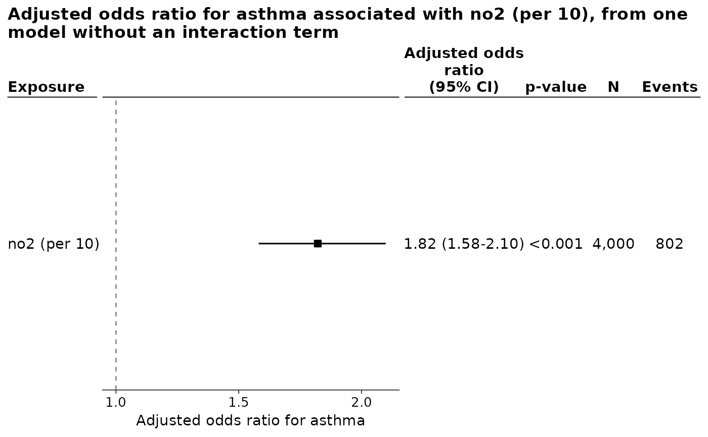
# A rate model. The offset is the time each child was followed for, so the
# measure is an incidence rate ratio and the person-time behind each row is
# drawn beside the counts.
fit_rate <- glm(asthma ~ no2 + sex + maternal_age +
offset(log(followup_years)),
family = poisson, data = foresty_cohort)
foresty_main(list(fit_rate), exposure = "no2",
labels = c(no2 = "NO2"), contrast = 10)
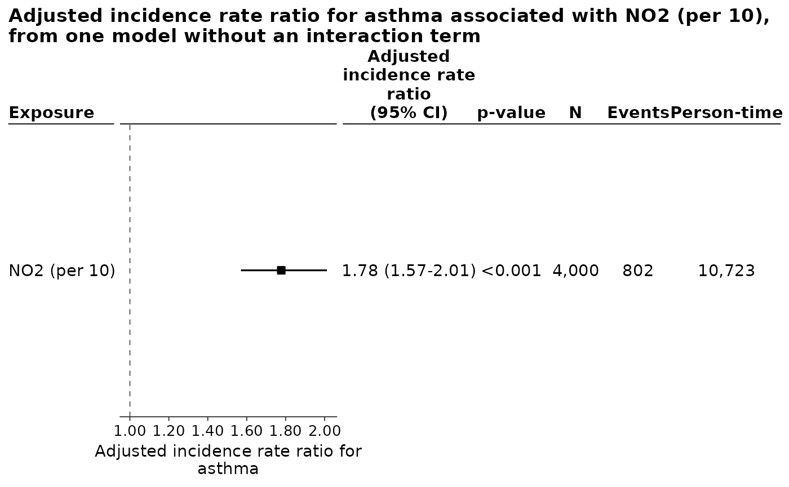
# A splined exposure: the two values being compared are named.
fit_spline <- glm(asthma ~ splines::ns(no2, 3) + sex + maternal_age,
family = binomial, data = foresty_cohort)
foresty_main(list(fit_spline), exposure = "no2", at = c(10, 20))
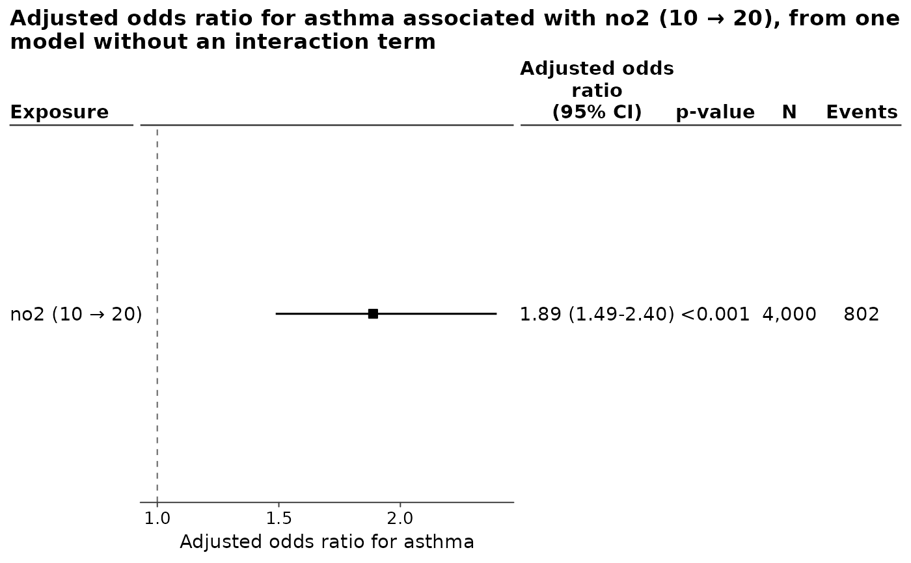
# On the scale the model was fitted on, as a log odds ratio about zero.
foresty_main(list(fit_no2), exposure = "no2", exponentiate = FALSE)
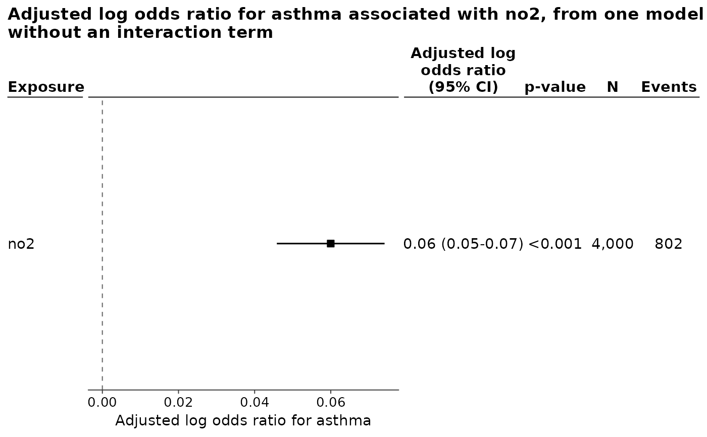
# The exposure, the outcome and the axis all named by hand.
foresty_main(list(fit_no2), exposure = c(`NO2, ug/m3` = "no2"),
outcome = "incident asthma by age 8",
xlab = "Adjusted odds ratio (95% CI)")
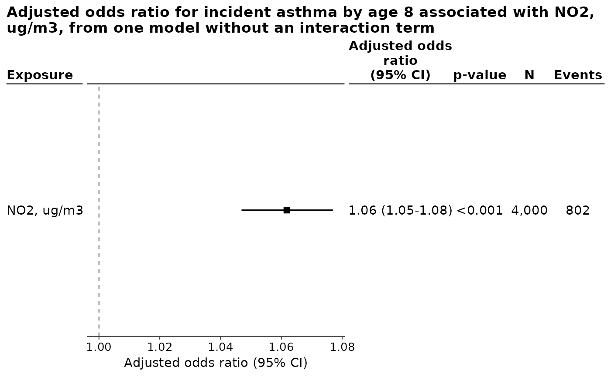
# Person-time reported per 1,000 rather than as the total.
foresty_main(list(fit_rate), exposure = "no2", person_time = 1000)
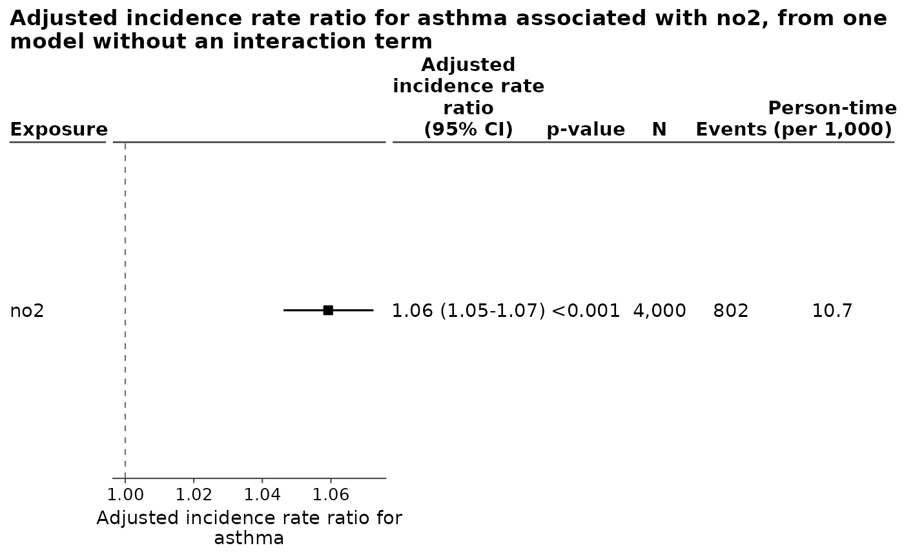
# A multinomial logistic regression has one equation per non-reference level
# of the outcome, so the exposure has one effect per level and the figure
# has one row per level. `outcome_reference` says which level they are all
# read against.
if (requireNamespace("nnet", quietly = TRUE)) {
fit_phenotype <- nnet::multinom(
wheeze_phenotype ~ no2 + sex + maternal_smoking,
data = foresty_cohort, trace = FALSE
)
# Against "None", which is the level the model itself was fitted against,
# and drawn as a row of its own so that the figure says so.
print(foresty_main(list(fit_phenotype), exposure = "no2", contrast = 10,
outcome_reference_row = TRUE))
# The same estimates read against another level instead.
against_transient <- foresty_main(list(fit_phenotype), exposure = "no2",
contrast = 10,
outcome_reference = "Transient")
summary(against_transient)
}
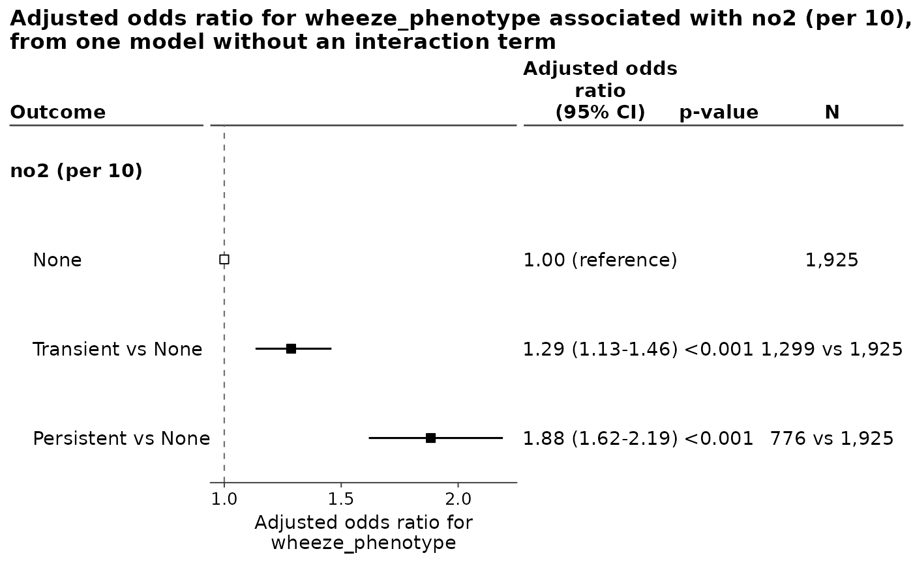
#>
#> Call:
#> nnet::multinom(formula = wheeze_phenotype ~ no2 + sex + maternal_smoking,
#> data = foresty_cohort, trace = FALSE)
#>
#> Model: multinom, nnet
#> Measure: Odds ratio for wheeze_phenotype
#> Observations: 4,000
#>
#> Coefficients:
#> Estimate Std. Error z value Pr(>|z|)
#> Transient:(Intercept) -0.972611 0.131120 -7.418 1.19e-13
#> Transient:no2 0.025137 0.006426 3.912 9.15e-05
#> Transient:sexMale 0.227565 0.072119 3.155 0.00160
#> Transient:maternal_smokingYes 0.036794 0.095343 0.386 0.69956
#> Persistent:(Intercept) -2.456297 0.166546 -14.748 < 2e-16
#> Persistent:no2 0.063286 0.007736 8.181 2.82e-16
#> Persistent:sexMale 0.538588 0.086947 6.194 5.85e-10
#> Persistent:maternal_smokingYes 0.329175 0.107258 3.069 0.00215
#>
#> Odds ratio for wheeze_phenotype (95% CI):
#> Variable Level OR 95% CI p N Events
#> no2 (per 10) None vs Transient 0.78 0.69-0.88 <0.001 4,000 1,925
#> no2 (per 10) Persistent vs Transient 1.46 1.25-1.72 <0.001 4,000 776